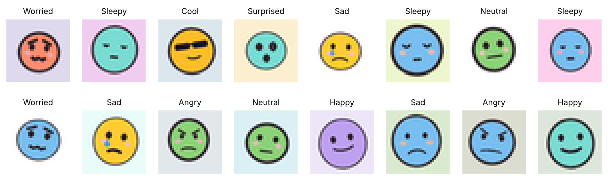

A short introduction. Each section below has its own video: the idea first, then the matching notebook steps. Captions are built in.
By the end of today you can:
- explain what a seed is and why it makes the faces repeatable
- explain why training faces and test faces are kept apart
- explain what the three transforms do to each face, and why
- explain what a batch and an epoch are
Where the Faces Come From: Seeds 0-15 min
The faces aren't photos. emoji_faces.py draws each one, making random choices as it goes: the face colour, its size, how far it tilts, whether it has rosy cheeks, the background colour.
But computers can't make truly random numbers. They use a recipe that turns one starting number into a long list of numbers that look random. That starting number is called the seed.
- The same seed always gives the same list, so the same choices, so the same face.
make_face(42)is the same face on every computer in the room, today and next year. - A different seed gives a different list, so a different face.
The seed also decides the mood. The mood is the seed's last digit: the remainder when you divide by 10.
| Seed | Seed ÷ 10 leaves | Mood |
|---|---|---|
| 7 | 7 | Worried |
| 17 | 7 | Worried |
| 1,007 | 7 | Worried |
| 40 | 0 | Happy |
So any 10 seeds in a row give one face of each mood.
In your notebook
Run section 1. The first cell makes two lists from seed 42: they're identical. Seed 43 gives a different list. Then check that make_face(42) gives the same face twice. In the YOUR TURN cell, work out the mood of seed 123 before you check.
Key idea
Seeds make the whole project repeatable. Everyone in the class trains on exactly the same faces and is tested on exactly the same faces, so results can be compared fairly.
A Dataset 15-25 min
A Dataset holds the examples in a numbered list. Ask it for example number 3, and it hands you a pair: (picture, mood).
class EmojiFaces(Dataset):
def __init__(self, how_many, first_seed, transform=None):
self.faces = []
for seed in range(first_seed, first_seed + how_many):
picture, mood = make_face(seed)
if transform:
picture = transform(picture)
self.faces.append((picture, mood))
def __len__(self):
return len(self.faces)
def __getitem__(self, idx):
return self.faces[idx]
__init__draws all the faces once and stores them.__len__says how many there are.__getitem__hands over face numberidx.
We make two datasets that are never mixed:
- Training faces: 12,000, from seeds 0 to 11,999. The Mood Machine learns from these.
- Test faces: 3,000, from seed 1,000,000. They're kept back and only used to mark it.
Think
Why not test the Mood Machine on the faces it learned from? What would go wrong if the test faces used seeds 0 to 2,999?
Answer
Seeds 0 to 2,999 are already training faces, so the test would use exact copies of faces the model learned from. It could score well just by remembering them. Think of a student who memorises last year's exam paper: full marks on that paper, but it proves nothing. A fair test uses questions they've never seen.
In your notebook
Run section 2.
Getting Pictures Ready 25-38 min
make_face gives an ordinary picture, with each colour stored as a whole number from 0 to 255. The network needs a tensor of small decimals. Three transforms do this, one after another:
get_ready = v2.Compose([
v2.ToImage(), # 1
v2.ToDtype(torch.float32, scale=True), # 2
v2.Normalize(mean=[0.5, 0.5, 0.5], std=[0.5, 0.5, 0.5]), # 3
])
- ToImage turns the picture into a tensor of shape
(3, 32, 32). - ToDtype turns each whole number from 0 to 255 into a decimal from 0 to 1, by dividing by 255.
- Normalize works out (value − 0.5) ÷ 0.5 for every number. That moves the range from 0 to 1 into −1 to 1, centred on 0.
Why? Each neuron multiplies its inputs by weights and adds them up. If the inputs were as big as 255, those totals and their gradients would be huge, and gradient descent would overshoot, just like a learning rate that's too big. Small numbers centred on 0 keep everything a sensible size.
In your notebook
Run section 3. Then do the YOUR TURN cell: what do 0, 0.25 and 1 become after Normalize?
Batches and Epochs 38-52 min
In your notebook
Run the first cell of section 4 now. It draws all 15,000 faces, which takes about a minute.
A DataLoader hands the faces to the network in batches of 64. The network looks at a whole batch, works out the average loss, and takes one step downhill. Learning from one face at a time would be slow and jumpy. Averaging over 64 gives a steadier direction.
For the training faces, the DataLoader also shuffles them into a new order every time, so the network can't learn anything from the order.
12,000 ÷ 64 = 187.5, so there are 188 batches (the last has only 32 faces). One trip through all 188 batches is an epoch. The Mood Machine will train for several epochs, seeing every face several times.

In your notebook
Run the rest of section 4. One batch has shape (64, 3, 32, 32). Then do the last YOUR TURN cell: count the faces of each mood.
Think
Every mood has exactly 1,200 training faces. Why does that matter? What could a model get away with if 90% of the faces were Happy?
Answer
If 90% were Happy, a model could score 90% just by always answering "Happy", without learning anything. Equal numbers of each mood stop any answer being a shortcut. Because the mood comes from the seed's last digit, any run of seeds gives equal numbers automatically.
Check Your Understanding 52-60 min
Check your understanding
1. A neural network is trained to recognise handwritten digits. Explain why the data is split into a training set and a test set. 2 points
2. Give one reason why pixel values are scaled before training. 1 point
3. Explain what is meant by an epoch. 1 point
What a full answer includes
1 The training set is used to adjust the weights. The test set is data the network hasn't seen, so it shows whether the network works on new data rather than just remembering the training data.
2 One of: to keep the totals and gradients inside the network from getting too big / to help training settle on good weights / so no input counts for more just because its numbers are bigger.
3 One complete pass through all of the training data.